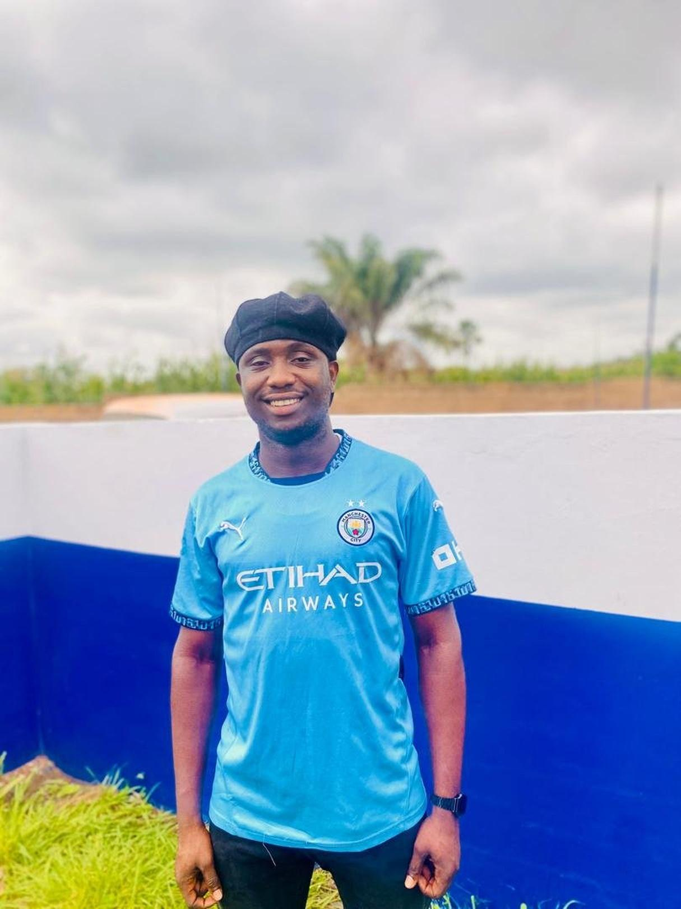
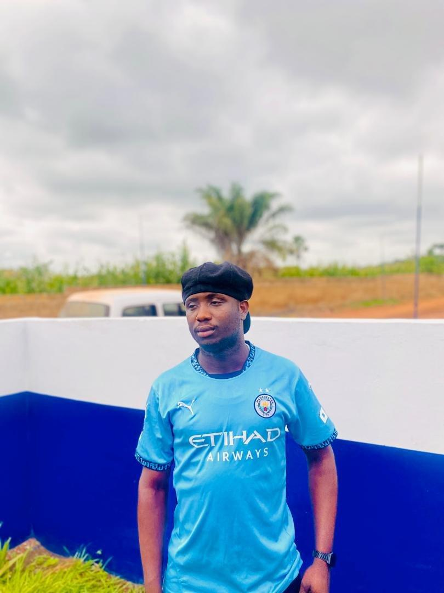
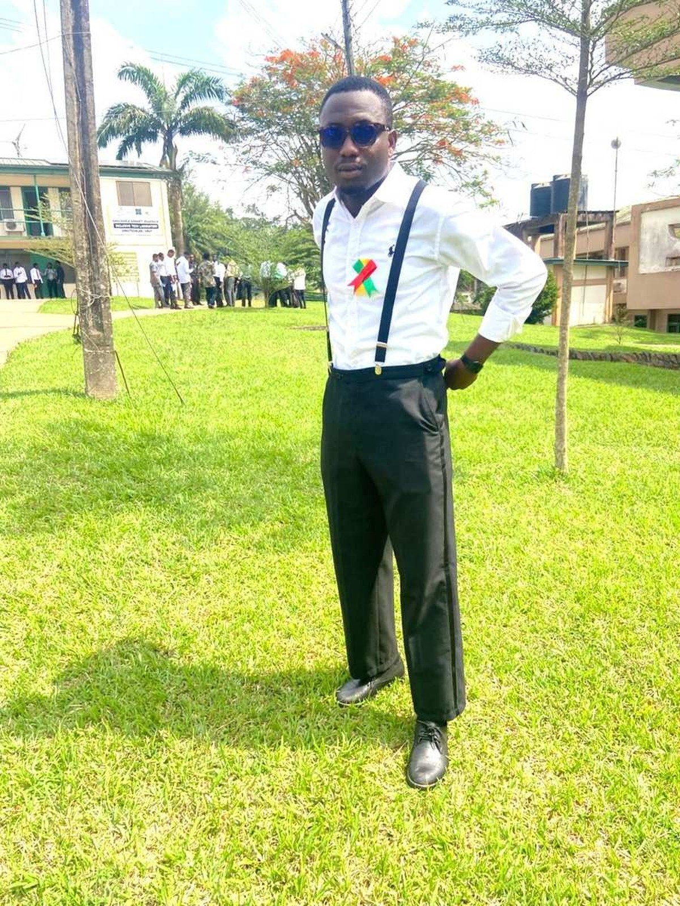

Just Me Being Me
Some casual shots taken during my free time. The Manchester City jersey is basically a uniform at this point.


Life on Campus
These were taken during campus events and academic programmes. The white shirt and suspenders are my go-to for anything formal at school.


About These Photos
I believe in capturing real moments — nothing staged or overly polished. The photos in this gallery are a genuine reflection of who I am: a student who loves football, takes his academics seriously, and isn't afraid to dress well for the occasion.
Quick Gallery Facts:
- 4 personal photos displayed across 2 categories
- All images have descriptive alt text for screen readers
- Photos were taken at various locations in Ghana
- All images are original and belong to Asare Twum Gideon